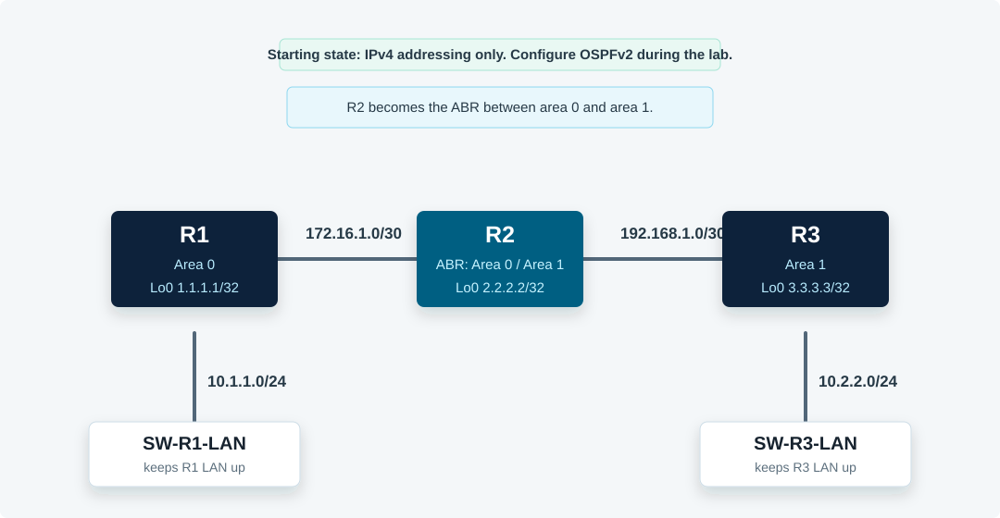

Overview
This lab configures multi-area OSPFv2 from an addressing-only starting state. R1 is in area 0, R3 is in area 1, and R2 is the ABR between the two areas. You will configure wildcard-mask network statements, verify route learning and neighbors, and make the R1 LAN-facing interface passive.
All commands in this guide use the CML Ethernet interface names shown in the topology.
Topology
R1 and R2 share area 0 on 172.16.1.0/30. R2 and R3 share area 1 on 192.168.1.0/30. The small IOL-L2 switches keep each LAN interface operational so the 10.1.1.0/24 and 10.2.2.0/24 networks can be advertised.

Task 1: Verify the Starting State
Confirm addressing and direct connectivity before enabling OSPF. At this point, only connected routes should exist.
! R1, R2, R3
show ip interface brief
show ip route connected
! R1
ping 172.16.1.2
! R3
ping 192.168.1.1Task 2: Configure OSPFv2 on All Routers
Configure every active routed interface and loopback to participate in OSPFv2. Use the process IDs and areas from the supplied lab.
! R1
conf t
router ospf 1
network 10.1.1.0 0.0.0.255 area 0
network 1.1.1.1 0.0.0.0 area 0
network 172.16.1.0 0.0.0.3 area 0
end
! R2
conf t
router ospf 2
network 172.16.1.0 0.0.0.3 area 0
network 2.2.2.2 0.0.0.0 area 1
network 192.168.1.0 0.0.0.3 area 1
end
! R3
conf t
router ospf 1
network 0.0.0.0 255.255.255.255 area 1
endTask 3: Verify OSPFv2 from R3
Verify that R3 learns area 0 routes through R2 and can reach R1's loopback.
! R3
show ip route
show ip route ospf
ping 1.1.1.1
show ip protocolsExpected result: R3 should learn R1's loopback and LAN as inter-area routes and should show OSPF process 1 routing for all local addresses in area 1.
Task 4: Verify OSPFv2 from R2
Use R2 to verify both adjacencies, the local OSPF RIB, and interface-level OSPF details on the R1-facing link.
! R2
show ip ospf neighbor
show ip ospf rib
show ip ospf interface Ethernet0/0
show ip route ospfExpected result: R2 should have a full adjacency with R1 in area 0 and a full adjacency with R3 in area 1.
Task 5: Make the R1 LAN Interface Passive
Make R1's LAN-facing interface passive so the 10.1.1.0/24 route remains advertised, but OSPF does not send hellos toward the LAN segment.
! R1
conf t
router ospf 1
passive-interface Ethernet0/0
end
show ip protocols
show ip ospf interface Ethernet0/0
show ip route 10.1.1.0